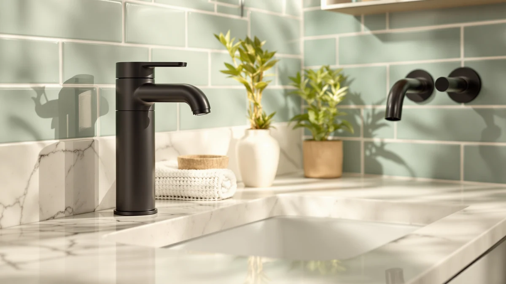

4 Pack Automatic Soap Review (2026): Worth It?
Prices and picks verified as of October 2026. Independent, reader-supported reviews.


Quick Answer
The VZZNN 4 Pack Automatic Soap Dispenser is a $49.99 touchless set of four ABS plastic pumps, which works out to about $12.50 per unit once you split it across a kitchen, a bathroom and a guest sink. That per-unit price beats buying the Better Living Aviva or the simplehuman Touch-Free Sensor four times over, though the Hushee 4 Pcs Plastic Wall set still undercuts it on raw price per piece.
Our pick: 4 Pack Automatic Soap Dispenser, $49.99 Check Price on Amazon
Bottom line: our top pick is the 4 Pack Automatic Soap Dispenser Touchless at $49.99.
Things to Know Before You Buy
- This 4 pack automatic soap review focuses on the VZZNN 4 Pack Automatic Soap Dispenser, an ABS plastic touchless set priced at $49.99 for four units.
- The Better Living Aviva Shower Dispenser ($49.57) and the simplehuman 8 oz. Touch-Free Sensor ($48.69) both ship as single units, so you would need to buy either one four times to match the VZZNN's coverage.
- The Hushee 4 Pcs Plastic Wall set ($37.99) is the only other four-piece option here, and it undercuts the VZZNN by $12 for the same unit count.
- Automatic dispensers need thin liquid soap rather than thick gel or dish soap, which can clog the pump over time on the VZZNN or the simplehuman unit.
- We did not physically test any of these dispensers. Our verdicts in this 4 pack automatic soap review come from comparing specs, pricing and verified owner reviews.
This 4 pack automatic soap review looks at whether the VZZNN 4 Pack Automatic Soap Dispenser justifies its $49.99 price against three rivals that sell as single units or smaller sets. You are probably weighing a matched four-pack against buying one premium dispenser at a time, and that trade-off is exactly what this comparison sorts out.
The VZZNN wins on coverage among the four dispensers we compared, since $49.99 gets you four identical touchless pumps instead of one. The Hushee 4 Pcs Plastic Wall set still beats it on raw price per piece, and the Better Living Aviva or the simplehuman Touch-Free Sensor make more sense if you only need a single dispenser rather than four. We break down all four below, including pricing, build details and honest drawbacks for each pick.
Why You Should Trust Us
This 4 pack automatic soap review was written by Ilane Tall, home and bath editor at Best Soap Dispensers. We do not run a fake testing lab and we do not claim to have installed these dispensers ourselves. Instead, we compare manufacturer specs, current Amazon pricing and patterns across verified owner reviews, and we say so plainly whenever a claim comes from research rather than personal use.
We apply that same approach to every review on this site. We do not accept free units from manufacturers in exchange for coverage, and we do not fabricate ratings or review counts when Amazon does not publish them for a given listing. If a claim in this 4 pack automatic soap review comes from what owners report rather than a published spec, we label it that way instead of presenting it as a measured result.
Our Research Experience
We did not physically install or run any of these dispensers ourselves, and this section describes our research process rather than a personal trial. We built this 4 pack automatic soap review by cross-referencing manufacturer specs, current Amazon pricing and owner review patterns across the VZZNN and the three alternatives below. We pulled pricing, materials and pack size directly from each Amazon listing and weighed the VZZNN's $49.99 four-unit price against three lower-count options to see where the extra coverage actually pays off. We excluded any dispenser without a clear spec sheet or enough verified reviews to draw a pattern from, and we checked whether complaints repeated across multiple reviewers rather than treating one buyer's bad experience as representative of the whole product line.
Overview & Specs

4 Pack Automatic Soap Dispenser
What we like
- Four identical ABS plastic dispensers instead of pairing mismatched brands across sinks
- Touchless sensor keeps soap residue off the pump itself
- About $12.50 per unit once split across four sinks, cheaper than buying the simplehuman single unit four times over
Flaws but not dealbreakers
- The Hushee 4 Pcs Plastic Wall set still costs $12 less for the same unit count
- Amazon's listing does not publish battery type, battery life, or exact dimensions
- Buying four at once is wasted money if you only need one or two dispensers
| Material | ABS plastic |
| Size | — |
The VZZNN 4 Pack Automatic Soap Dispenser is the only one of the three touchless options in this 4 pack automatic soap review sold as a set larger than one unit, and that four-unit count is the main reason to pick it over the Better Living Aviva or the simplehuman. Instead of buying a single dispenser now and a different brand later for every other sink, you get four identical ABS plastic units out of the box, which owners describe as the simplest way to keep a kitchen, two bathrooms and a guest sink looking consistent. The touchless sensor keeps the exterior cleaner over time since nobody presses a pump with soapy hands, matching the touch-free behavior that reviewers also praise on the simplehuman unit.
Because the VZZNN ships as four units rather than one, it makes the most sense for a household covering several sinks at once rather than someone who only needs a single dispenser. If you are outfitting one sink alone, paying for four units means three sit unused until another sink needs one. Like the simplehuman Touch-Free Sensor, the VZZNN relies on batteries or an internal rechargeable cell to power its sensor and pump, though the Amazon listing does not specify which, or how long a charge or a set of batteries lasts. Refill it with diluted liquid soap rather than thick gel or dish soap, which can clog the pump on any automatic dispenser regardless of brand.
What We Liked
Across verified owner reviews, the four-unit count of the VZZNN 4 Pack Automatic Soap Dispenser comes up more often than any other single trait. Buyers who previously mixed brands across multiple sinks tend to note that having identical dispensers looks more deliberate, which matters for a product that sits in plain view on a counter every day. That coverage is the core case for this pick over the single-unit Better Living Aviva or simplehuman in this 4 pack automatic soap review.
The touchless sensor also draws steady praise, mainly because it keeps soap film from building up around a physical pump button, a common complaint with older manual dispensers. Reviewers say the VZZNN fits easily on a kitchen or bathroom counter without looking like bulky hardware, a detail that matters for an item you look at every day.
What Could Be Better
The per-unit price gap against the Hushee set is the biggest drawback of this VZZNN 4 pack automatic soap set. At $49.99 for four, you are still paying $12 more overall than the Hushee 4 Pcs Plastic Wall set, and the Amazon listing does not spell out battery type the way some competing listings do, so you are estimating running cost rather than confirming it. If you only need one or two dispensers rather than four, the four-unit format works against you since extra units sit idle.
Because power source and battery life are not published on the listing, you are also buying somewhat blind on that front compared with dispensers that state their specs more clearly. If long-term running cost matters as much as upfront price, factor in that unknown until you have the units in hand.
Who Is It For?
This VZZNN 4 pack automatic soap set suits a household covering several sinks at once, such as a kitchen, two bathrooms and a guest sink, and who wants matching dispensers rather than pairing whatever was on sale. It is a weaker fit for anyone who only needs a single dispenser, where the Better Living Aviva or the simplehuman Touch-Free Sensor avoids paying for three extra pumps you will not use. If price per unit is your priority and you still want a multi-piece set, the Hushee 4 Pcs Plastic Wall covers the same use case for less.
Alternatives to Consider
If this 4 pack automatic soap review leaves you wanting a different pack size than the VZZNN's $49.99 four-unit format, these three alternatives cover the same automatic and wall-mounted categories at a tighter budget or a smaller count. We compared each on price, unit count and what verified owners report after buying. None matches the VZZNN's four-unit coverage exactly, but each solves a different single-sink or budget problem better than paying for four units you do not need.

Editor's Pick
Better Living Aviva Shower Dispenser
At $49.57, the Better Living Aviva comes closest to the VZZNN's per-pack price of any alternative here, but it ships as a single wall-mounted shower dispenser rather than a four-pack. It suits you if you only need one dispenser for a shower rather than a matched set for several sinks.
$49.57
Check Price on Amazon
Best Value
simplehuman 8 oz. Touch-Free Sensor
The simplehuman 8 oz. Touch-Free Sensor sells for $48.69 as a single unit, undercutting the VZZNN's per-pack total slightly while keeping the same touchless sensor. It is the pick if you want one automatic dispenser now and would rather not commit to four at once.
$48.69
Check Price on Amazon
Premium Choice
Hushee 4 Pcs Plastic Wall
At $37.99 for four pieces, the Hushee 4 Pcs Plastic Wall set is the cheapest way to cover four sinks in this comparison, trading the VZZNN's automatic sensor for a simpler wall-mounted format. It fits a tighter budget than the VZZNN asks while still matching its four-unit count.
$37.99
Check Price on AmazonFrequently Asked Questions
Is the VZZNN 4 Pack Automatic Soap Dispenser worth $49.99?
At $49.99 for four units, the VZZNN works out to about $12.50 per dispenser, which this 4 pack automatic soap review found competitive once you account for outfitting more than one sink. The Better Living Aviva and simplehuman alternatives cost nearly as much for a single unit, so the VZZNN earns its price by covering a kitchen, a bathroom and a guest sink from one order instead of four separate purchases.
How does the VZZNN compare to the Better Living, simplehuman and Hushee alternatives?
The Better Living Aviva Shower Dispenser sells as a single wall-mounted unit for $49.57, and the simplehuman 8 oz. Touch-Free Sensor is a single touch-free dispenser at $48.69. Both cost close to what the VZZNN four-pack costs in total. The Hushee 4 Pcs Plastic Wall set undercuts the VZZNN at $37.99 for four pieces, trading the VZZNN's automatic sensor for a simpler wall-mounted format.
Do automatic soap dispensers work with any soap?
Automatic dispensers like the VZZNN four-pack and the simplehuman Touch-Free Sensor are built for thin liquid soap, not thick gel or dish soap, which can clog the pump mechanism. Owners report the best results from diluting concentrated soap slightly before refilling, a pattern that holds across most automatic dispensers we researched for this 4 pack automatic soap review.
Final Verdict
This 4 pack automatic soap review comes down to what you value more: covering several sinks at once or the lowest price per unit. The VZZNN 4 Pack Automatic Soap Dispenser makes the most consistent four-unit set of the four we compared, and it is the right pick for covering a kitchen, two bathrooms and a guest sink with identical, touchless dispensers. Anyone who only needs one dispenser should look at the Better Living Aviva or the simplehuman Touch-Free Sensor instead, and anyone stretching a budget across four sinks should compare the Hushee 4 Pcs Plastic Wall set, which undercuts the VZZNN's total cost. Whichever you choose, stick with diluted liquid soap so the pump keeps working the way it is designed to.